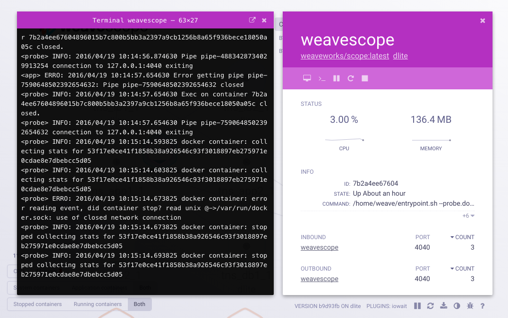
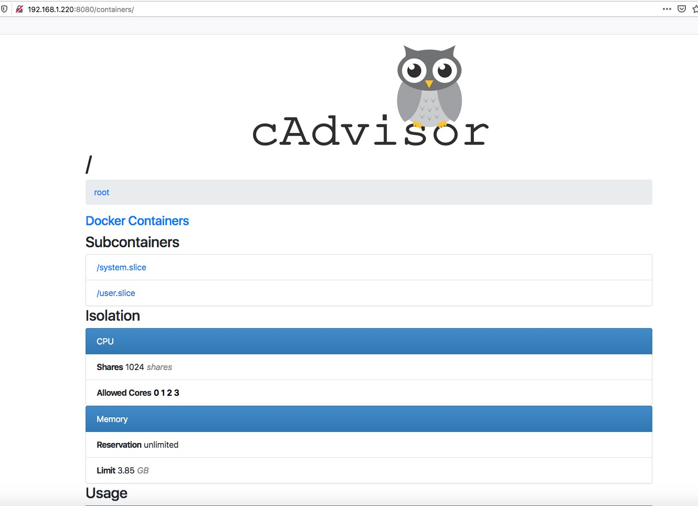
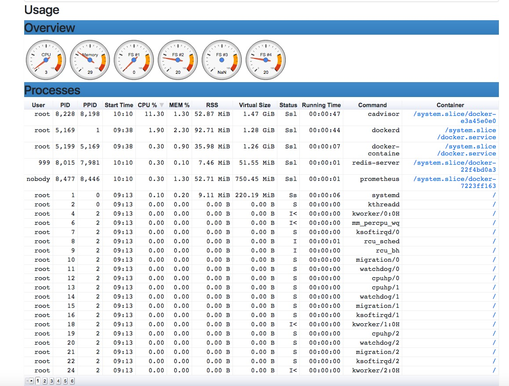
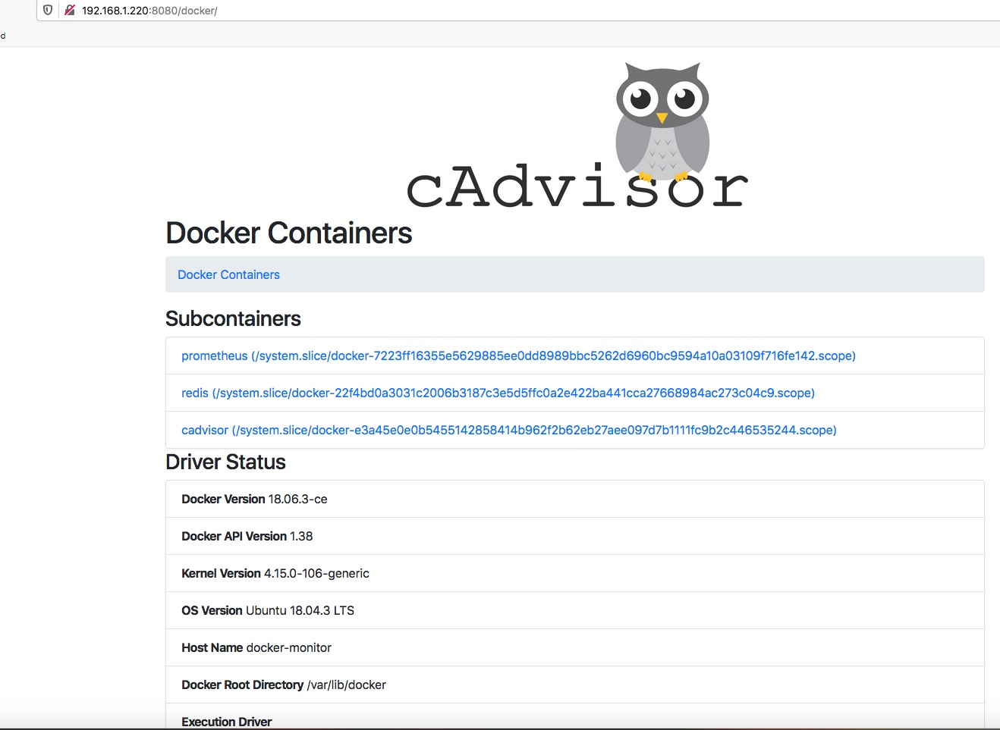

Docker-Swarm集群监控（一）
Prometheus监控Docker Swarm集群 （一）
Docker自带的一些监控命令¶
docker ps
查看现在正在运行的所有容器实例。
docker top container_name
某个容器中到底运行了哪些进程。
docker stats
对于查询每个容器对于各种资源的使用情况，那么可以直接使用docker stats，默认会显示一个持续变化的列表状态，显示每个容器实例的CPU、内存可用量等等。
Weave Scope 介绍¶
Weave Scope 是 Docker 和 Kubernetes 可视化监控工具。Scope 提供了至上而下的集群基础设施和应用的完整视图，用户可以轻松对分布式的容器化应用进行实时监控和问题诊断。 Weave Scope的GitHub地址为：https://github.com/weaveworks/scope，对于容器监控，docker自带的监控子命令是最简单的最容易使用的， 但是对于多Host监控、告警及监控非容器资源都不支持，且用户友好度不够。Weave Scope则解决了多Host监控、监控非容器资源，但是不支持告警，不过对于一般小型的微服务容器实例监控是足够了。 此外，Weave Scope对于大屏显示的界面友好度及Dashboard做的还是不够好。
Weave Scope的特性：
- 实时了解Docker容器

- 上下文细节和深层链接

-
与容器交互和管理
-
通过插件扩展

安装Weave Scope，使用默认端口4040访问。
sudo curl -L git.io/scope -o /usr/local/bin/scope
sudo chmod a+x /usr/local/bin/scope
scope launchDocker可视化管理工具Portainer¶
Portainer是一个轻量级的管理界面，可以让您轻松地管理不同的Docker环境（Docker主机或Swarm集群）。 Portainer提供状态显示面板、应用模板快速部署、容器镜像网络数据卷的基本操作、事件日志显示、容器控制台操作、Swarm集群和服务等集中管理和操作、登录用户管理和控制等功能。 功能全面，基本能满足中小型单位对容器管理的全部需求。
运行命令：
docker run -d --privileged --restart always --name portainer -v /data/portainer/data/:/data -v /var/run/docker.sock:/var/run/docker.sock -p 19000:9000 portainer/portainer访问：http://ip:19000
cAdvisor简介¶
为了解决容器的监控问题，Google开发了一款容器监控工具cAdvisor（Container Advisor），它为容器用户提供了对其运行容器的资源使用和性能特征的直观展示。 它是一个运行守护程序，用于收集，聚合，处理和导出有关正在运行的容器的信息。
cAdvisor可以对节点机器上的资源及容器进行实时监控和性能数据采集，包括CPU、内存、网络及文件系统使用情况。
cAdvisor使用go语言开发，如果想了解更多请访问其官方github
安装cAdvisor¶
cAdvisor 有两种方法来运行，一种是以二进制可执行文件安装运行，配置 systemd 来管理，另一种是以 Docker 容器运行，使用docker-compose来管理，在这里我们只讲docker方式部署与管理方法。
我们可以通过以下命令来在实验环境的虚拟机运行cAdvisor容器：
Docker方式启动
docker run \
--volume=/:/rootfs:ro \
--volume=/var/run:/var/run:rw \
--volume=/sys:/sys:ro \
--volume=/var/lib/docker/:/var/lib/docker:ro \
--volume=/dev/disk/:/dev/disk:ro \
--publish=18080:18080 \
--detach=true \
--name=cadvisor \
google/cadvisor:latest以上的启动方式对于管理来说稍显繁琐，为了方便管理，我们使用docker-compose来管理
安装docker-compose
curl -L "https://github.com/docker/compose/releases/download/1.26.0/docker-compose-$(uname -s)-$(uname -m)" -o /usr/local/bin/docker-compose
chmod +x /usr/local/bin/docker-compose
mkdir -p /data/docker-monitor/docker-compose文件
cat > docker-compose.yml <<EOF
version: '3.2'
volumes:
prometheus_data: {}
grafana_data: {}
services:
prometheus:
image: prom/prometheus:latest
container_name: prometheus
ports:
- 9090:9090
command:
- --config.file=/etc/prometheus/prometheus.yml
volumes:
- ./prometheus.yml:/etc/prometheus/prometheus.yml:ro
depends_on:
- cadvisor
cadvisor:
image: google/cadvisor:latest
container_name: cadvisor
ports:
- 8080:8080
volumes:
- /:/rootfs:ro
- /var/run:/var/run:rw
- /sys:/sys:ro
- /var/lib/docker/:/var/lib/docker:ro
depends_on:
- redis
redis:
image: redis:latest
container_name: redis
ports:
- 6379:6379
EOF
# Prometheus.yml文件
cat > prometheus.yml <<EOF
global:
scrape_interval: 15s # 每15秒抓取一次数据，默认值为1分钟
evaluation_interval: 15s # 每15秒检测一次可用性，默认值为1分钟
scrape_timeout: 60s # 抓取的超时时间
# Alertmanager
alerting:
alertmanagers:
- static_configs:
#- targets: ['127.0.0.1:9093']
# 抓取配置配置
scrape_configs:
- job_name: 'cadvisor'
scrape_interval: 10s
static_configs:
- targets: ['localhost:8080']
labels:
instance: 'cadvisor-server'
alias: 'cadvisor'
EOF
# 启动
docker-compose up -ddocker会自动去pull images，需要等一会，等待启动完成后，我们直接可以访问 http://192.168.1.220:8080



以上是我们为了大家能了解docker是如何监控实现的方法的，现在我们进入docker监控具体环节，GitHub上已经有了已经配置好的开源，直接拿来用即可。
git clone https://github.com/stefanprodan/dockprom.git
ADMIN_USER=admin ADMIN_PASSWORD=admin docker-compose up -d先决条件:
- Docker Engine >= 1.13
- Docker Compose >= 1.11
Containers:
- Prometheus (metrics database) http://
:9090 - Prometheus-Pushgateway (push acceptor for ephemeral and batch jobs) http://
:9091 - AlertManager (alerts management) http://
:9093 - Grafana (visualize metrics) http://
:3000 - NodeExporter (host metrics collector)
- cAdvisor (containers metrics collector)
- Caddy (reverse proxy and basic auth provider for prometheus and alertmanager)
启动完成以后，我们直接访问http://192.168.1.220:3000端口，使用初始化的账号密码，admin:admin进入，此时会提示你修改密码，修改成你需要的密码即可。
新加配置自动发现¶
redis:
image: redis:latest
container_name: redis
restart: unless-stopped
expose:
- 6379
networks:
- monitor-net
labels:
org.label-schema.group: "monitoring"
# 重启
docker-compose up -d